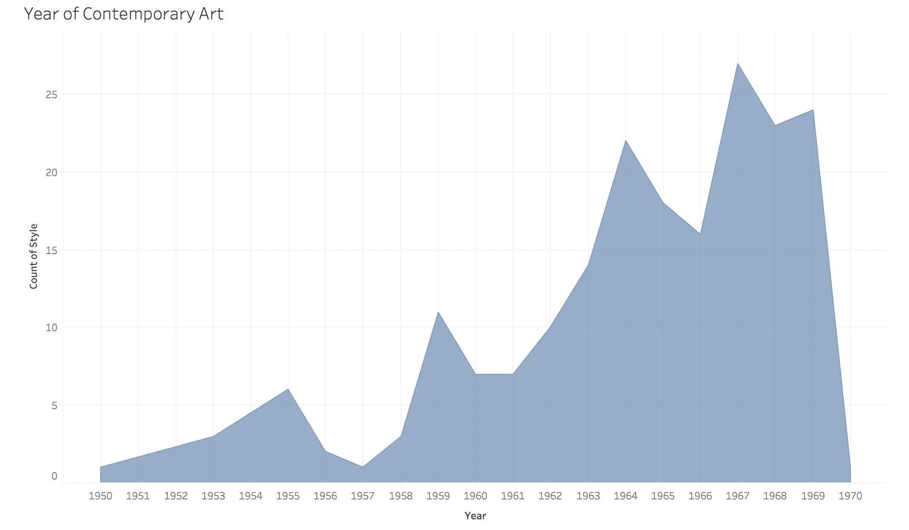
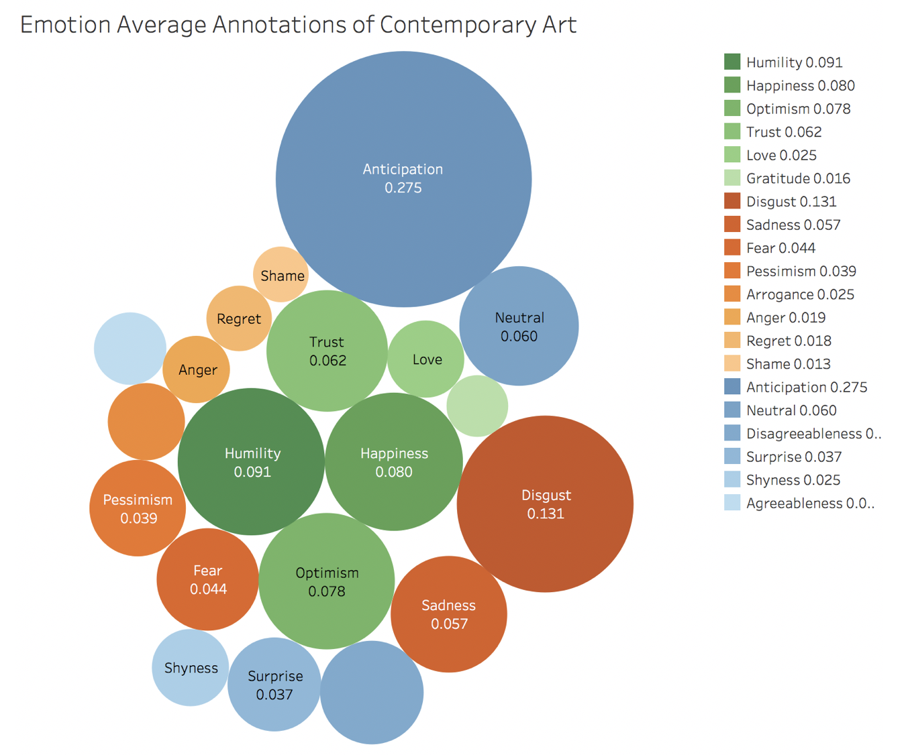
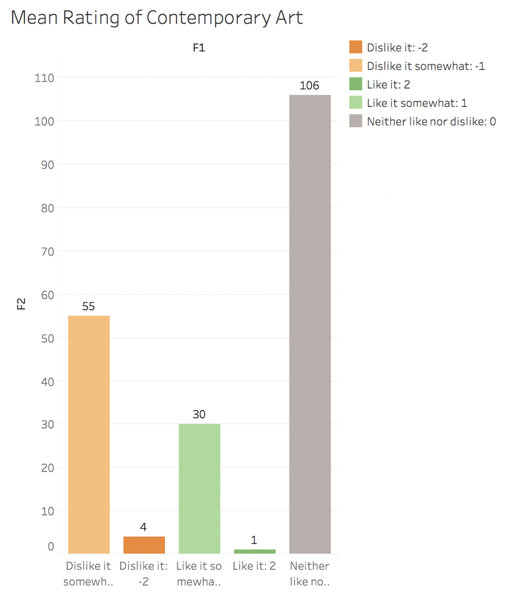

Contemporary art is the art of today, produced in the second half of the 20th century or in the 21st century. The work of Contemporary Art is a dynamic combination of materials, methods, concepts, and subjects that continue the challenging of boundaries that was already well underway in the 20th century.
The pieces of Contemporary Art chosen in this dataset are among twenty years: 1950 ~ 1970. The high peak of it is Year 1959 to Year 1979, which is also the high peak for the actual development of Contemporary Art.


This bubble chart shows the emotion average annotation of Contemporary Art. Different colors of bubbles mean different emotion types. Green bubbles represent positive emotions; orange bubbles represent negative emotions and blue bubbles represent other emotions--mixed or neutral. The color inside each emotion type is from dark to light according to the average annotations.
This bubble chart shows that the anticipation gets the most consistent label.
The positive emotions and negative emotions have the similar level of annotation scores. In the work of Contemporary Art, there are both positive and negative work.
This bar chart shows How did the annotators like the piece of Contemporary Art on average (-3 (strongly dislike) to 3 (strongly like)).
The colors of green mean like, gray means neither like nor dislike and the colors of oranges mean dislike. The colors change from dark to light according to how much the annotators like the piece of art work.
In this bar chart, we can see that most of the annotators chose ‘neither like nor dislike it”, which is 106 and more than the total amount of all the other choices. 55 annotators chose ‘dislike it somewhat’, which is much more than the number of people that chose “like it’ and ‘ like it somewhat’.
We can come to the conclusion that the annotators hold a relatively neutral attitude to the style of Contemporary Art.
